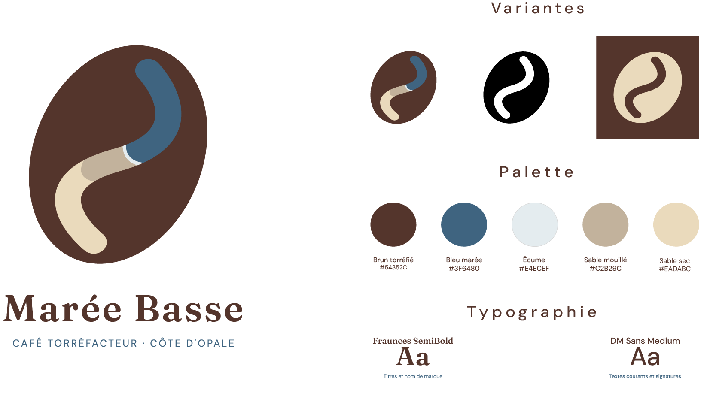
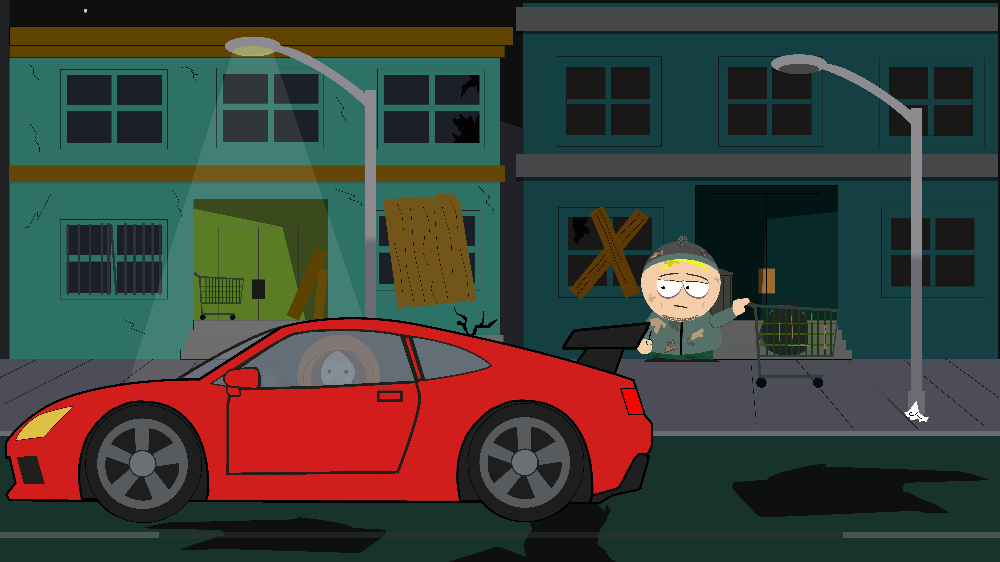

Portfolio personnel
Site web de présentation réalisé dans le cadre de mon DEUST Webmaster et métiers de l'internet : HTML sémantique, plusieurs pages reliées entre elles, versionné avec Git et publié sur GitHub.
Site web de présentation réalisé dans le cadre de mon DEUST Webmaster et métiers de l'internet : HTML sémantique, plusieurs pages reliées entre elles, versionné avec Git et publié sur GitHub.
Création du logo sur Illustrator avec ses variantes et son style typographique. Création du site web de la marque en HTML/CSS.

Scène réalisée en première année de DEUST WMI : une rue de nuit délabrée, avec des immeubles aux fenêtres brisées, des lampadaires qui éclairent le trottoir, un caddie abandonné et une voiture de sport rouge au premier plan. Le travail porte sur la mise en scène, les ambiances de lumière et le style graphique de la série.
